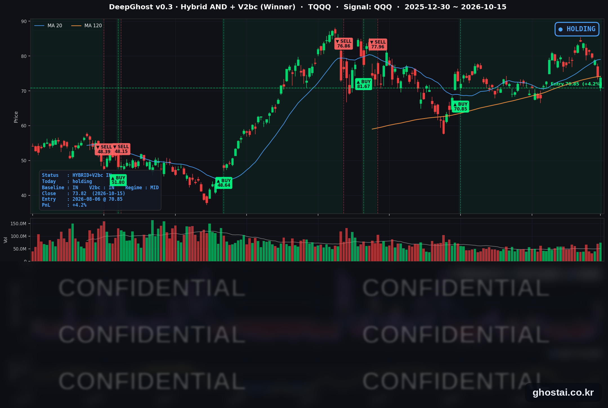

PPI 급등에도 금리 급락, 반도체 외 종목은 대부분 상승
· Ghost.AI 데일리 리포트
👻 매일 시그널과 히스토리를 홈페이지에서 한눈에 → www.ghostai.co.kr
회원 페이지 안내 — 회원 가입하시면 커버리지 전 종목의 원본 시그널과 분석 레포트를 매일 확인하실 수 있습니다. 회원 페이지는 블로그·유튜브보다 먼저 업데이트됩니다. 선착순 100명을 모집하고 있으며, 이메일과 필명만으로 가입하실 수 있고 서비스 사용료는 받지 않습니다. 가입 신청 후 운영자 승인을 거쳐 이용하실 수 있습니다.
9월 생산자물가(PPI)가 전월 대비 1.3% 올라 2022년 3월 이후 가장 크게 올랐고 소매판매도 예상을 웃돌았지만, 시장은 휘발유 가격이 끌어올린 수치로 봤습니다. 10년물 금리는 10.1bp 내린 5.089%로 마감해 2025년 8월 이후 가장 크게 하락했고, S&P 500 구성종목 493개 중 377개가 올랐습니다. 다우는 1.08%, 러셀 2000(IWM)은 1.37% 올랐습니다. 반면 반도체 ETF(SOXX)는 8거래일 연속 내려 나스닥 종합은 0.08% 오르는 데 그쳤고, 나스닥 100(QQQ)은 0.13% 내렸습니다. TQQQ는 0.40% 내린 73.82달러로 마감했고, 전략은 50거래일째 보유를 유지했습니다.
📊 오늘의 매매 신호
| 항목 | 내용 |
|---|---|
| 오늘 할 일 | ✅ 아무것도 안 해도 됩니다 |
| 포지션 상태 | 📈 TQQQ 보유 중 (IN POSITION) |
| 매수 진입일 | 2026-08-06 (50거래일째) |
| 진입가 → 현재가 | $70.85 → $73.82 |
| 현재 포지션 수익 | +4.19% |
TQQQ 시그널 — IN POSITION
현재 상태: 매수 포지션 유지 중 | 이번 포지션 수익 +4.19%

TQQQ는 -0.40% 내린 73.82달러로 마감해 4거래일 연속 하락했고, 9월 18일 이후 가장 낮은 종가입니다. 전략의 평가수익률은 전 거래일 +4.62%에서 +4.19%로 낮아졌습니다. TQQQ 종가는 6월 2일 최고 종가(87.22달러)보다 15.36% 낮습니다.
나스닥 100은 장 시작 전 코스피 급락과 AI 하드웨어 약세가 이어져 장 초반 1% 넘게 내렸지만, 금리가 크게 내리면서 하락폭을 대부분 되돌려 0.13% 하락으로 마감했습니다.
오늘 새 신호는 없었고 전략은 보유를 유지했습니다. 전 거래일 크게 줄었던 매도 신호까지의 여유는 오늘 다시 늘었습니다. 다만 8월 진입 이후 평소 수준보다는 여전히 작아, 다음 거래일 결과에 따라 매도 신호가 나올 수도 있고 보유가 이어질 수도 있습니다. 매도 신호가 나오면 그다음 거래일 미국 장 시가(한국시간 밤 10시 30분) 기준으로 전략 포지션이 정리됩니다.
오늘 미국 시장 — 시황 요약
지수 마감
| 지수 | 종가 | 등락률 | 최고 종가 대비 |
|---|---|---|---|
| S&P 500 | 7,744.06 | +0.33% | -0.96% (10/6) |
| 나스닥 종합 | 26,713.03 | +0.08% | -3.21% (10/6) |
| 다우존스 | 52,177.69 | +1.08% | -4.00% (8/5) |
| 러셀 2000 (IWM) | 275.08 | +1.37% | -9.84% (8/14) |
| QQQ (나스닥100) | 728.00 | -0.13% | -4.17% (10/6) |
| TQQQ | 73.82 | -0.40% | -15.36% (6/2) |
| 반도체 ETF (SOXX) | 514.71 | -0.91% | -21.42% (6/22) |
다우는 9월 3일, IWM은 8월 4일 이후 가장 크게 올랐습니다. IWM과 QQQ의 등락률 차이 1.50%p는 7월 16일 이후 가장 컸습니다. QQQ는 4거래일 연속 내려 9월 18일 이후 가장 낮은 종가로 마감했습니다. SOXX는 8거래일 연속 내렸고(10월 6일 -0.01% 포함), 8거래일 연속 하락은 2015년 9월 이후 처음입니다. 오늘 사상 최고 종가를 낸 지수는 없습니다.
국채 금리 동향
| 만기 | 10/14 종가 | 10/15 종가 | 전일 대비 |
|---|---|---|---|
| 3개월 | 4.085% | 4.088% | +0.3bp |
| 5년 | 4.992% | 4.899% | -9.3bp |
| 10년 | 5.190% | 5.089% | -10.1bp |
| 30년 | 5.525% | 5.429% | -9.6bp |
10년물 하락폭은 2025년 8월 1일 이후 가장 컸고, 10년물·5년물은 9월 22일 이후 가장 낮은 수준입니다. 재무부 자료 기준 2년물도 4.82%에서 4.77%로 5bp 내렸습니다. 3개월물만 소폭 올라 10년물과 3개월물의 차이는 110.5bp에서 100.1bp로 줄었고, 커브는 역전 없는 우상향입니다. 로이터는 AI 종목 매도에 따른 안전자산 수요, 10월 동결 전망, 소매판매 증가분 대부분이 휘발유라는 해석을 금리 하락 이유로 꼽았습니다. 단기 금리는 그대로 두고 장기 금리만 내린 움직임으로, 연준의 인상 경로 기대는 유지되고 장기 성장·물가 전망은 낮아졌다는 뜻입니다.
연준 발언 & 금리 패스
- 10월 15일 장중: 연준 공식 일정상 예정된 위원 발언은 없었습니다.
- 워시(Warsh) 의장 — 게오르기에바 IMF 총재와 대담: 장 마감 뒤인 23:30(ET, 방콕 현지 10/16)에 잡힌 일정입니다. 10월 17일(토)부터 공개 발언 금지 기간이 시작돼 FOMC 전 마지막 공개 발언 자리입니다.
- 최근 발언 (10/14): 데일리(샌프란시스코) 총재는 추가 인상이 필요할 가능성이 크지만 10월에 서두를 필요는 없다고 했고, 보우먼 부의장도 지켜볼 시간이 있다고 말했습니다. 굴스비(시카고) 총재는 9월 CPI를 "실망스럽다"고 평가했습니다.
매파적 경로는 유지, 10월은 동결 쪽입니다. PPI·소매판매 발표 뒤에도 10월 인상 확률은 30% 안팎에 머물렀고, 연말까지 한 차례 이상 인상할 확률은 90% 안팎입니다. 정책금리는 3.75~4.00%이고, 시장은 다음 인상 시점을 12월로 보고 있습니다. 10월 27~28일 회의 전까지 남은 주요 물가 지표는 없으며, 9월 PCE는 회의 다음 날인 10월 29일에 나옵니다.
오늘의 핵심 이슈
- 물가·소비 지표는 예상보다 높았지만 국채 금리는 크게 내렸습니다. 9월 PPI는 전월 대비 1.3% 올라 예상(0.5%)을 크게 웃돌았고, 에너지 가격이 10.8% 오른 것이 상승분의 대부분이었습니다. 소매판매도 0.8% 늘어 예상(0.3%)을 웃돌았지만, 주유소 매출을 빼면 0.2% 증가였고 GDP 계산에 들어가는 통제그룹은 0.1%로 예상(0.3%)보다 낮았습니다.
- 반도체·AI 하드웨어 종목은 약세가 이어졌습니다. 장 시작 전 코스피가 7.57% 내려 서킷브레이커가 발동됐고(SK하이닉스 -11.06%, 삼성전자 -9.48%), TSMC는 3분기 순이익이 68.7% 늘었지만 미국 예탁증서는 내렸다고 보도됐습니다. 저희가 직접 고른 AI 하드웨어·반도체·전력 관련 42종목의 등락률 중간값은 -1.59%로, 나머지 S&P 500 구성종목 451개(중간값 +1.70%)와 반대로 움직였습니다. HPE(-7.10%)·델(-6.80%)·아리스타(-5.04%)가 크게 내렸습니다.
- S&P 500 구성종목의 4분의 3이 올랐습니다. 493종목 중 377개(76.5%)가 올라 6월 12일 이후 상승 종목 비율이 가장 높았습니다. 금리 하락과 함께 주택건설(레나 +5.66%), 소매(나이키 +5.21%, 베스트바이 +5.69%), 소프트웨어(인튜이트 +6.36%, 서비스나우 +6.14%)가 올랐고, 경기소비재는 47종목 중 46개가 올랐습니다. 에너지는 21종목 중 1개만 올랐습니다.
변동성 & 투자심리
VIX는 16.87에서 16.46으로 2.43% 내렸습니다. CNN 공포탐욕지수는 전일 32.3에서 31.5로 0.8 내려 "공포" 구간에 머물렀습니다(1주 전 39.8, 한 달 전 28.0). 구성 지표 중 주가 강도·시장 폭·풋/콜 비율은 "극단적 공포", VIX·정크본드 수요는 "중립"입니다. 대부분의 종목이 오르고 VIX도 내렸지만, 반도체 약세가 8거래일째 이어져 심리는 공포 구간을 벗어나지 못했습니다.
매크로 & 원자재
| 품목 | 종가 | 등락률 |
|---|---|---|
| WTI 선물 | $96.12 | +1.08% |
| 원유 ETF (USO) | $157.31 | +2.44% |
| 금 선물 | $4,192.50 | +2.06% |
| 금 ETF (GLD) | $382.71 | +1.79% |
- 유가: 미국 정부가 일부 유조선 제재 완화를 검토한다는 보도에 장 초반 내렸다가, EIA 주간 원유재고가 860만 배럴 줄었다는 발표(허리케인으로 멕시코만 생산 중단)에 올랐습니다. 호르무즈 해협에서는 선박 두 척이 미확인 발사체에 맞았습니다. USO·WTI 선물은 6거래일 연속 올랐습니다.
- 금: 전날 하락을 되돌렸고, GLD 상승률은 9월 3일 이후 가장 컸습니다.
주요 종목 동향
| 종목 | 종가 | 등락률 | 비고 |
|---|---|---|---|
| QCOM | 178.40 | +3.35% | 9/25 이후 최대 상승, 아날로그·통신칩 동반 상승 |
| NFLX | 72.61 | +2.89% | 9/14 이후 최대 상승, 10/20 3분기 실적 |
| MU | 931.24 | +1.87% | 5거래일 연속 하락 뒤 반등 |
| MSFT | 539.44 | +1.08% | 소프트웨어 동반 상승 |
| GOOGL | 349.22 | +0.45% | |
| AMZN | 254.76 | +0.27% | 3거래일 연속 하락 뒤 반등 |
| META | 736.72 | -0.11% | 2거래일 연속 하락 |
| AAPL | 342.00 | -0.28% | 전일 사상 최고 종가 뒤 소폭 하락 |
| AVGO | 344.33 | -0.55% | 10/1 이후 최저 종가 |
| TSLA | 362.44 | -1.29% | 4거래일 연속 하락, 10/21 3분기 실적 |
| NVDA | 217.23 | -1.84% | 9/16 이후 최저 종가 |
| INTC | 95.37 | -2.80% | 커버리지 최대 하락, 9/3 이후 최저 종가 |
커버리지 12종목 중 6종목이 오르고 6종목이 내렸습니다. 반도체 안에서도 퀄컴·마이크론은 오르고 인텔·엔비디아·브로드컴은 내렸습니다. 젠슨 황 엔비디아 CEO는 AI 데이터센터 임대 업체 코어위브에 대해 "낙관적이다. 그들의 자본조달 비용은 오히려 내려가고 있다"고 말했습니다. 마이크로소프트는 소프트웨어 종목과 함께 올랐습니다.
다음 일정 (미 동부시간)
- 10/16(금) 장 시작 전 지역은행 실적(트래블러스·트루이스트·M&T 뱅크·리전스·시티즌스) / 08:30 9월 수입·수출물가 (한국시간 밤 9시 30분) / 09:15 9월 산업생산·설비가동률 / 10월물 옵션 만기
- 10/17(토) 연준 위원 공개 발언 금지 기간 시작
- 10/20(화) 넷플릭스 3분기 실적(장 마감 후) / 10/21(수) 테슬라 3분기 실적(장 마감 후)
- 10/27~28 FOMC (28일 14:00 결정, 14:30 기자회견)
- 10/29(목) 9월 개인소득·지출(PCE)·3분기 GDP 속보치
- 10/30(금) 3분기 고용비용지수
다음 거래일 체크포인트 (10/16)
- TQQQ 전략 상태 — 매도 신호까지의 여유가 다시 늘었지만 8월 진입 이후 평소보다는 작은 상태입니다. 10월 16일 장 마감 뒤 매도 신호가 나오는지, 보유가 이어지는지 확인합니다.
- 반도체 9거래일째 하락 여부 — SOXX가 반등하는지가 반도체 비중이 큰 나스닥 100의 방향에 영향을 줍니다.
- 지역은행 실적 — 금리 하락 속에서 대출 증가와 예금 비용이 어떻게 나오는지 봅니다.
Ghost.AI — Quantitative AI Investment
Model: DeepGhost v0.3 | Transformer-Based Deep Learning
Coverage: 14 tickers | Updated every trading day after US market close
⚠️ 본 자료는 정보 제공 목적으로만 작성되었으며 투자 권유가 아닙니다. 모든 투자의 책임은 투자자 본인에게 있습니다. 과거 성과가 미래 수익을 보장하지 않습니다.
[유의사항]
- 본 서비스는 불특정 다수를 대상으로 발행되는 단방향 정보 제공 서비스이며, 투자자 개인의 재산 상황·투자 목적·위험 선호도를 반영한 개별 투자 조언이 아닙니다.
- 고스트에이아이 주식회사는 고객과 쌍방향 의사소통(개별 상담, 맞춤형 자문 등)을 제공하지 않습니다.
- 본 콘텐츠는 투자 권유 또는 매매 주문의 청약·청약의 권유에 해당하지 않으며, 최종 투자 판단 및 그에 따른 손익의 책임은 전적으로 투자자 본인에게 있습니다.
고스트에이아이 주식회사